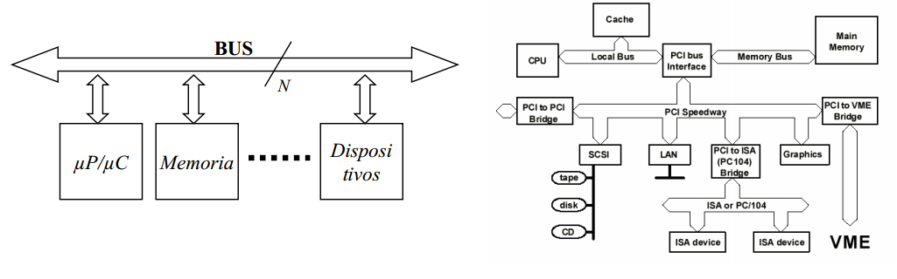
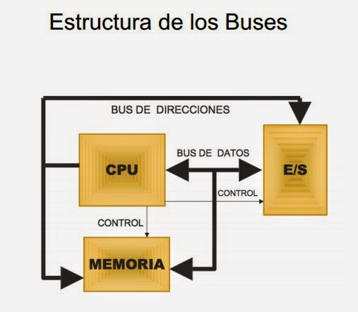
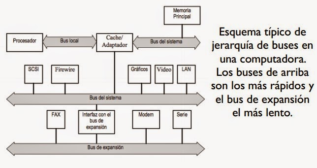

Unidad I
1.2.Análisis de los componentes
1.2.4.Buses
BUS: Elemento fundamental de intercomunicación en la arquitectura de Von Newmann. Se define mediante:
- Número y tipo de líneas que lo componen.
- Protocolo de transmisión de información.

El bus incluye los conceptos de enlace y conmutador, ya que permite en cada momento seleccionar los dispositivos que se conectan a través suyo.
- Enlace: Elemento que permite transmitir información entre dos o más dispositivos.
- Conmutador: Elemento que permite encaminar la información entre varios enlaces, activando unos e inhibiendo otros.
- Multiplexado temporal: Utilización de las mismas líneas del bus para enviar en momentos distintos, informaciones distintas. En estos buses de incluyen señales adicionales para identificar qué información está circulando por el bus en cada momento. Sistema abierto
- Sistema que permite acoplar placas de distintos fabricantes.
- Hasta hace unos años el estudio de los buses era algo que no se hacía, dado que cada fabricante desarrollaba su propio bus.
- Los sistemas abiertos supusieron la creación de estándares que garantizan la compatibilidad entre las placas diseñadas por distintos fabricantes.
1.2.4.2.Tipo de buses
SERIE y PARALELO: los primeros transmiten bit a bit y los segundos varios bits a la vez.
- Multiplexado y no multiplexados (dedicados): los multiplexados realizan diferentes funciones en función de las necesidades del momento.
- Centralizados y distribuidos: necesidad de determinar qué elemento transmite y cuál recibe. Generalmente existe administración centralizada por la CPU o procesador.
- Síncronos y asíncronos (temporización): cómo ocurren los diferentes eventos (comienzo, fin,...) implicados en la transmisión de información. Utilización de una señal de reloj (comunicación síncrona) o unas líneas de protocolo (comunicación asíncrona).
1.2.4.3.Estructura de buses
Los buses se componen de líneas eléctricas que transmiten un “0” (cero voltios) o un “1” (más de cero voltios).
- Líneas/bus de datos: camino para transferir datos entre el resto de componentes de un computador. Su anchura (número de líneas eléctricas) suele ser una potencia de dos (8=23, 16=24, 32=25, 64=26,...).Estructura de los Buses
- Líneas/bus de direcciones: designan la posición/dirección de los
- datos. Son salidas de la CPU/procesador y determinan capacidad de direccionamiento.
- Líneas/bus de control: controlan el acceso y uso de las líneas/buses anteriores.

1.2.4.3.Jerarquía de buses
Compatibilidad entre buses:
- Sólo si son eléctricamente idénticos. Las características de los diferentes tipos de buses deben estar normalizadas. Ejemplo: bus PCI, AGP, USB, FireWire...Jerarquías de Buses
- Antiguamente sólo existía un bus principal que lo conectaba todo: bus del sistema.
- Actualmente existe un conjunto de buses conectados entre sí y formando una jerarquía.
- Facilita la mejora del rendimiento de todo el computador al agrupar dentro de los diferentes tipos de buses aquellos componentes del ordenador que tienen aproximadamente la misma velocidad de transmisión de la información.
- Mientras más lejos del CPU, buses más lentos y normalmente de menos líneas de datos. Jerarquías de Buses Varios tipos de buses en función de su posición dentro de la jerarquía:
- Bus de CPU o “bus local” del procesador: elementos más rápidos tales como la memoria caché.
- Bus local ó bus del Sistema (Front Side Bus): conecta elementos tales como la memoria principal o dispositivos rápidos (por ejemplo AGP).
- Bus de expansión y/o E/S: PCI, USB, ATA, SCSI,...


Diseñado por:
Alumna: Gabriela González GonzálezNo.Control:18052288
Clase: Arquitectura de las computadoras
Semestre:Enero-Julio 2020
Hora clase: 5:00pm-6:00pm